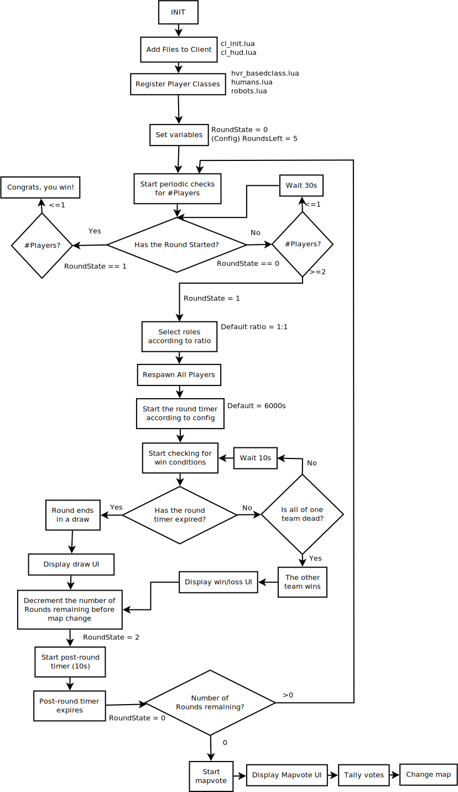

This is the basic list of features that the gamemode needs as a design:
| Feature | Justification |
|---|---|
| Round timer | To ensure that the game is complete within a certain time period. |
| Player classes | To divide the players into opposing forces. |
| Three stat system | To force players to take actions in order to replenish the stats, possibly revealing themselves in the process. |
| Custom HUD | Since the gamemode uses custom stats, this requires a new HUD to include this information. |
| A map with stat-replenishing elements | To satisfy the stats of humans and robots, which requires a map that includes appropriate element such as water sources and energy chargers. |
| Identifiable corpses | Once a player is dead, their human/robot status is revealed. This leads to group-enforced punishments for random kills. |
| A means of eliminating other players | To satisfy the game objective of eliminating the other team. |
The following flowchart was created to guide the implementation of the gamemode, particularly the round system which is central to the gameplay experience:
However, it soon became apparent that this flow chart was inadequate for several reasons:
This is a list of programs that I will use to develop the gamemode:
| Program | Use of program | Reasoning |
|---|---|---|
| Notepad++ | Source code editor | The best editor is the editor is the editor of your preference, and I am highly familiar with Notepad++. |
| git | Source control system | The only source control system with which I have experience. Cab easily be hosted on GitHub. |
| Inkscape | Vector graphics editor | Free as in freedom license. Useful set of features |
| The GIMP | Raster graphics editor | Same reasoning as Inkscape; raster and vector graphics features combined between the two are useful. |
| Source map editor: Hammer | Creation of map (game level) for the project | The only reasonable level editor available for the gamemode. |